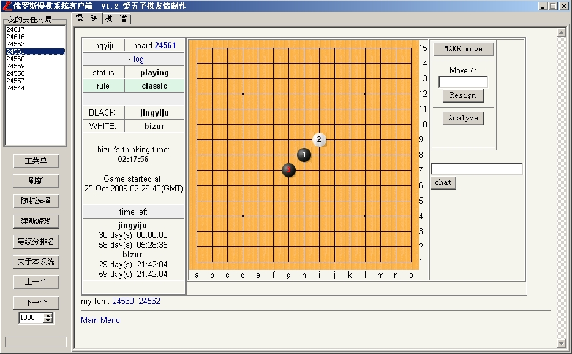
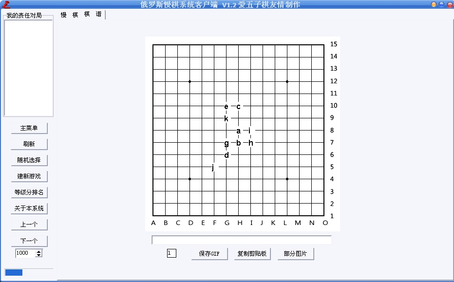
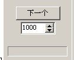

俄罗斯慢棋系统发布新版啦!
首页
五子棋软件
#1 俄罗斯慢棋系统发布新版啦! 作者：小丸.net 发表时间：2009-10-27 1:17:02
应广大棋友要求,俄罗斯慢棋继续发布新版本!以后会不断的推出新版哦!

软件名称:俄罗斯慢棋客户端
软件开发:康岩[小丸.net]
软件性质:免费软件
开发历史
V1.2
1.增加导出图片功能,图片可编辑
2.增加显示登录棋手的责任局功能
V1.0 Beta1
1.拥有慢棋系统的基础功能
 慢棋.rar
慢棋.rar
管理员就不要给我发威望了(如果你真的要发,那就给我5000JB~~),你直接发给抢到沙发的朋友哦!
［ 胆小的骆驼 于 2009-10-27 1:51:04 时花20金币送鲜花一朵］
［ 失落刀 于 2009-10-27 7:27:24 时花20金币送鲜花一朵］
#2 Re:俄罗斯慢棋系统发布新版啦! 作者：胆小的骆驼 发表时间：2009-10-27 1:51:28
谢谢楼主分享，下载看看先。
#3 Re:俄罗斯慢棋系统发布新版啦! 作者：失落刀 发表时间：2009-10-27 7:34:43
丸子，你好，鲜花奉上，另个人赞了1000金币也随后奉上。
强烈建议：界面上的英文除了ID用英国文以外，其他的通用部分建议翻译成中文，对你来说举手之劳，对俺来说，将带来极大方便。
#4 Re:俄罗斯慢棋系统发布新版啦! 作者：刀魂 发表时间：2009-10-27 8:38:02
小丸子：为什么我打开时这样子的

#5 Re:俄罗斯慢棋系统发布新版啦! 作者：uniwin 发表时间：2009-10-27 9:12:29
谢谢小丸！（强忍着没在后边加个“子”，因为小丸已经提醒过了，嘿嘿），强烈建议小丸将“部分图片”加上坐标，以方便后期编辑并提供给第三者看！
楼上的，你现在是在“棋谱”模式，请切换到“慢棋”模式就可以看了
#6 Re:Re:俄罗斯慢棋系统发布新版啦! 作者：刀魂 发表时间：2009-10-27 9:18:19
引用：
原文由 uniwin 发表于 2009-10-27 9:12:29 :
谢谢小丸！（强忍着没在后边加个“子”，因为小丸已经提醒过了，嘿嘿），强烈建议小丸将“部分图片”加上坐标，以方便后期编辑并提供给第三者看！
楼上的，你现在是在“棋谱”模式，请切换到“慢棋”模式就可以看了
谢谢哈！！！
#7 Re:俄罗斯慢棋系统发布新版啦! 作者：王志伟123 发表时间：2009-10-27 12:22:04
不会用！
#8 Re:Re:俄罗斯慢棋系统发布新版啦! 作者：刀魂 发表时间：2009-10-27 12:31:06
引用：
原文由 王志伟123 发表于 2009-10-27 12:22:04 :
不会用！
，我已经全部会了
#9 Re:俄罗斯慢棋系统发布新版啦! 作者：王志伟123 发表时间：2009-10-27 12:32:58
 咋用啊
咋用啊
#10 Re:俄罗斯慢棋系统发布新版啦! 作者：xr__ 发表时间：2009-10-27 12:37:01
有没有服务端
#11 Re:Re:俄罗斯慢棋系统发布新版啦! 作者：刀魂 发表时间：2009-10-27 12:53:15
引用：
原文由 王志伟123 发表于 2009-10-27 12:32:58 :
咋用啊
你+我QQ：421586704（刀魂）
#12 Re:俄罗斯慢棋系统发布新版啦! 作者：踏雪小子 发表时间：2009-10-27 13:38:48
老师曾今告诉过我，碰见不懂的就要问一下，也没人笑话你。所以我想问一下，这个东东是干什么用的啊，是做谱用的吗
#13 Re:Re:俄罗斯慢棋系统发布新版啦! 作者：刀魂 发表时间：2009-10-27 15:29:17
引用：
原文由 踏雪小子 发表于 2009-10-27 13:38:48 :
老师曾今告诉过我，碰见不懂的就要问一下，也没人笑话你。所以我想问一下，这个东东是干什么用的啊，是做谱用的吗
在线对弈、打谱、等等
#14 Re:俄罗斯慢棋系统发布新版啦! 作者：潇洒 发表时间：2009-10-27 15:48:52
刀魂大师 在俄罗斯慢棋 用什么ID？
#15 Re:俄罗斯慢棋系统发布新版啦! 作者：gerbo 发表时间：2009-10-27 22:27:47
 非常棒~~没钱送花了，强力顶帖，以后补花。。汗
非常棒~~没钱送花了，强力顶帖，以后补花。。汗
~~~谢谢 丸子~~~！！
#16 Re:俄罗斯慢棋系统发布新版啦! 作者：gerbo 发表时间：2009-10-27 22:32:26
刀魂大师 看你的QQ号，原来还在我后面哈，都已经成为大尸了
#17 Re:俄罗斯慢棋系统发布新版啦! 作者：极地剑客 发表时间：2009-10-29 8:44:29
哪位大师简单介绍一下俄罗斯慢棋的一些强人ID及其介绍啊?五林百晓生潇洒大师还不速速现身~
#18 Re:俄罗斯慢棋系统发布新版啦! 作者：失落刀 发表时间：2009-10-29 20:19:55
潇洒和无尽是连珠词典
#19 Re:Re:俄罗斯慢棋系统发布新版啦! 作者：极地剑客 发表时间：2009-10-29 21:31:20
引用：
原文由 失落刀 发表于 2009-10-29 20:19:55 :
潇洒和无尽是连珠词典
明教两位大师快来回答问题~
#20 Re:俄罗斯慢棋系统发布新版啦! 作者：第五象限 发表时间：2009-11-27 11:09:49
非常好的东西！！！
#21 Re:俄罗斯慢棋系统发布新版啦! 作者：极地剑客 发表时间：2009-12-8 5:54:28
可以人脑慢棋啦
#22 Re:俄罗斯慢棋系统发布新版啦! 作者：风雨相思 发表时间：2009-12-10 18:23:32
感谢楼主分享
#23 Re:俄罗斯慢棋系统发布新版啦! 作者：讨厌红楼梦 发表时间：2010-3-11 19:59:30
厉害么？
#24 Re:俄罗斯慢棋系统发布新版啦! 作者：极地剑客 发表时间：2010-6-30 7:46:50
伟大的丸子立功了~~~很方便地软件~~~可以去山口了~
#25 Re:俄罗斯慢棋系统发布新版啦! 作者：李文文 发表时间：2011-7-20 21:05:00
ghfhgfh飞过海开机开机看
#26 Re:俄罗斯慢棋系统发布新版啦! 作者：灯塔连珠 发表时间：2011-10-19 13:52:20
小丸请问怎么把棋谱转换成爱五子棋的格式呀？现在想把里边特定的谱拿出来怎么弄呀？你弄个新版本或者指点一下呀，急用！！！谢谢
#27 Re:俄罗斯慢棋系统发布新版啦! 作者：小丸.net 发表时间：2011-10-19 20:50:10

在这里输入棋谱的ID，会自动生成棋谱，然后使用五子妙手软件转换成爱五子棋的谱库。
目前这个慢棋系统的源码找不到了，等过了智运会写个更好的。现在先将就着用吧。
［此帖子已被 小丸.net 在 2011-10-19 20:51:26 编辑过］
#28 Re:俄罗斯慢棋系统发布新版啦! 作者：灯塔连珠 发表时间：2011-10-22 11:13:19
HHHGIJGGFGGHGIFIIFFJEJGKFKEIDHHLIMGLILIKGMKKJKHJHKHFFHJHKGKIIGIIFLJIHIJJ请问这是什么格式的棋谱呢？怎么转换成爱五子棋的格式呢？五子妙手怎么转换呢？
#29 Re:俄罗斯慢棋系统发布新版啦! 作者：有志青年 发表时间：2011-10-22 11:55:13
ShowPost.asp?ThreadID=15878
试试这种方法，直接访问网页，要不还在两个软件之间切换
方法2：ShowPost.asp?ThreadID=12509
用这个版本的，其中有个慢棋，复制代码，粘贴转换即可
［此帖子已被 有志青年 在 2011-10-22 11:58:58 编辑过］
#30 Re:俄罗斯慢棋系统发布新版啦! 作者：励 发表时间：2013-4-19 20:54:15
支持，，关注，，，，期待，，，，